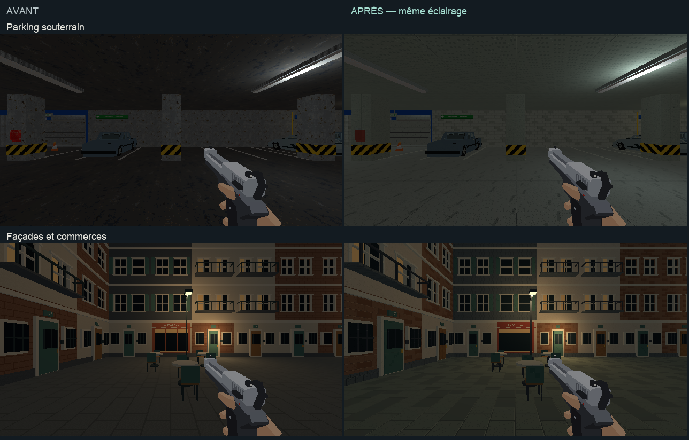
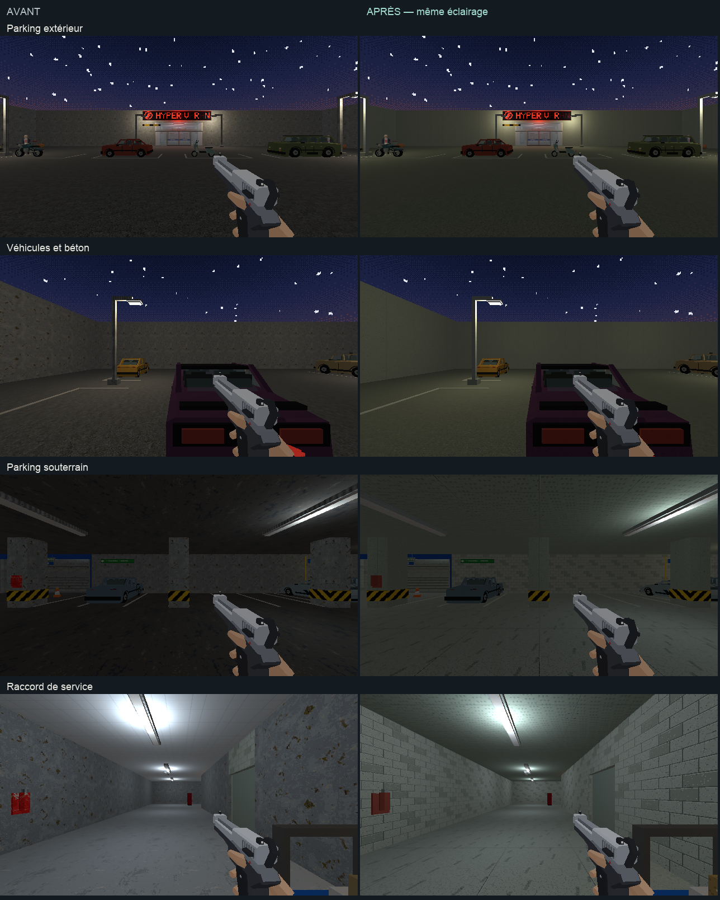
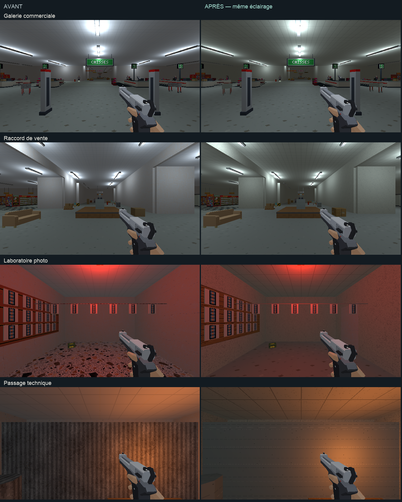
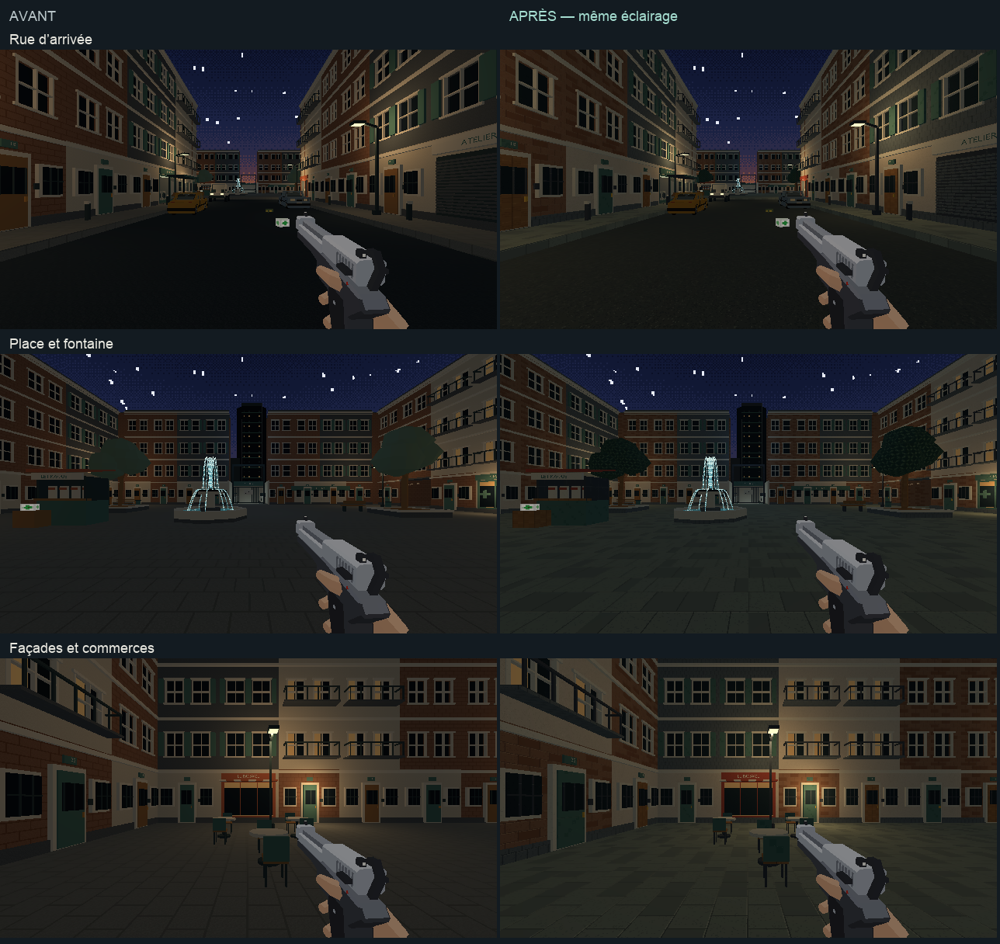
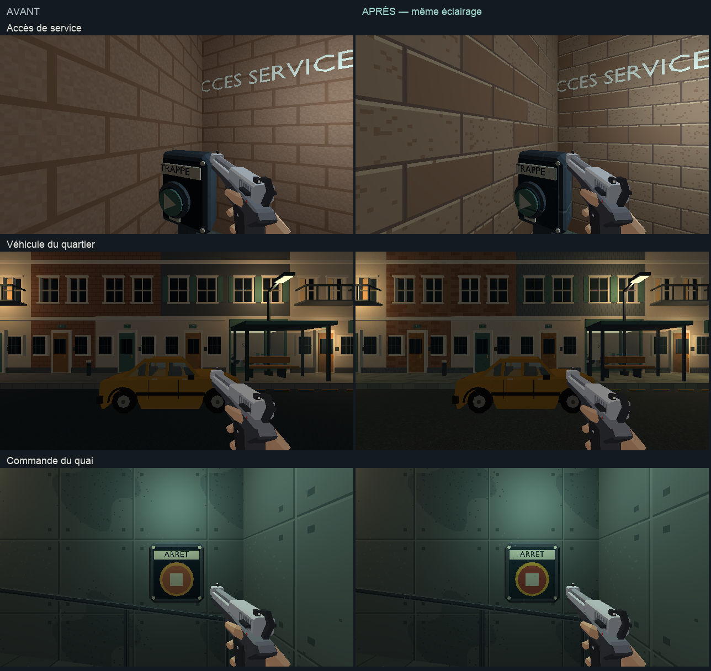

PROJET CASSANDRE · FINITION DES DÉCORS
Magasin et quartier harmonisés
Parkings, raccords, secrets, façades et véhicules complètent les zones déjà travaillées. Les ambiances lumineuses validées restent en place.
Explorer le magasinHuit points de vue : parkings, véhicules, galerie, raccords et locaux secrets.
Explorer le quartierSix points de vue : rue, place, commerces, accès de service et commandes.
Bureaux et directionMoquette bleue continue, dalles acoustiques et ossature de faux plafond.
Compte rendu et périmètre · Charte commune
Avant et après
Avant à gauche, après à droite. Les images viennent du jeu à 640 × 360.

Magasin : parkings, véhicules et raccord de service

Magasin : galerie, vente et locaux secrets

Métro : rue, place et façades

Métro : accès de service, véhicule et commande
